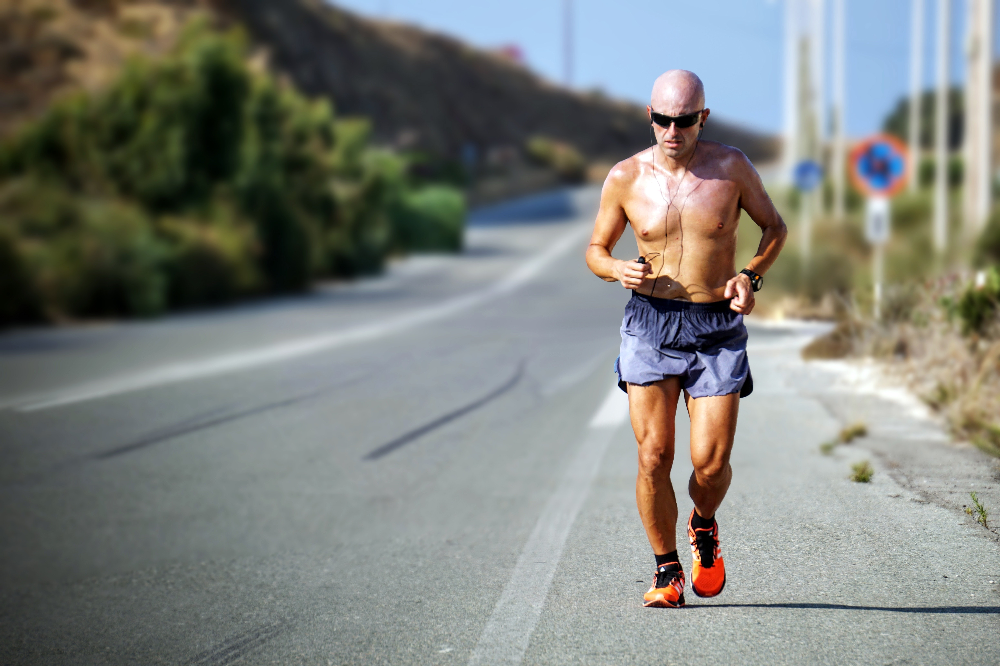
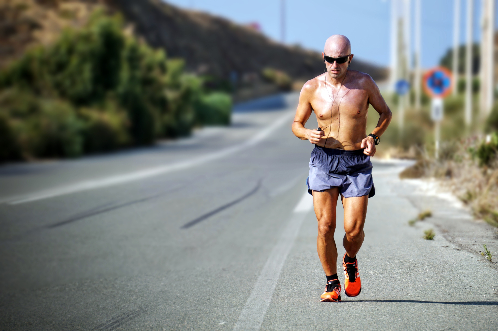

What is Triathalon?
Triathlons first and foremost are endurance races. There are a many distances to choose from starting at Sprints covering 25.75km all the way up to Ironman which covers 226km. They include 3 disciplines, swimming, biking, and running. As an athlete, you must complete one before moving on to the next. Each siatance in itself is a feat for most amateure athletes. Doing all three, in a single day deserves its own recognition.
Swimming is the first leg of any triathalon. Depending on the distance of the event, the swimming portion can cover from 750m for the sprint to 3.9km for a Ironman triathalom. You will typically see athletes dressed in wetsuites as well as other required equipment (goggles and cap). They will also have a timing cip around their ankles which is required to be worn during the whole race.
Once the swim is completed the athletes run from the water to a transition zone (T1). This is where they have stored their equipment for the bike portion of the event. Bikes are hung on racks with the equipment the athlete will use right beside their bikes, either on the ground or in a bin. What you will typically see in T1 is athletes tripping off their swimming equipment and replacing it with what they will use on the bike. Helmets and bibs (the number assigned to the athlete) are mandatory while other equipment is optional (i.e glasses, gloves, hydration packs, nutrition packs, ect). Once they have all the equipment ready to go they will run their bikes to the "mount line" whichthey MUST cross before hopping on their bikes and starting the bike leg of the event. This portion can be anywhere from 10km all the way up to 180km
 

If you were a pro in an Ironman, you can expect to be on the bike for about 6 hours! Your legs are cramping, you're tired, and you probably just want to go home.. But these athletes wont quit yet. There is still one final part to this event. The RUN! Athletes will hop off their bikes before the "dismount line" and run to there assigned spot in T2 (a transition zone for bike to run. Can be the same as T1 or be in a different place). This is where they will shed their bike equipment and replace it with what they will take on the run. Again, some equipment is mandatory. Some is not. Most athletes will opt for optional equipment as it will make the last leg of the event must easier and also safer. This part of the race can be anywhere from 2.5km all the way to 42km (Yes, a marathon!)